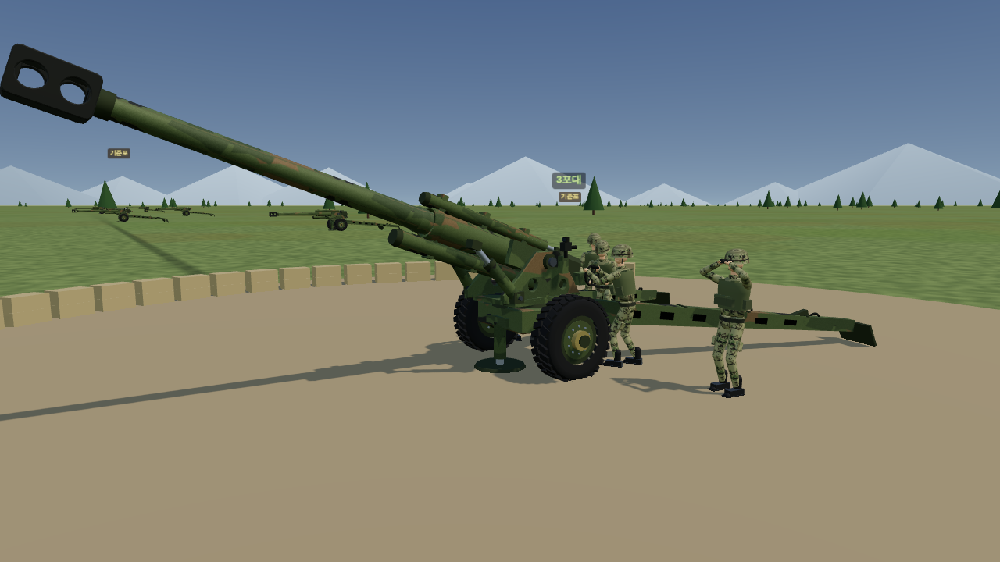
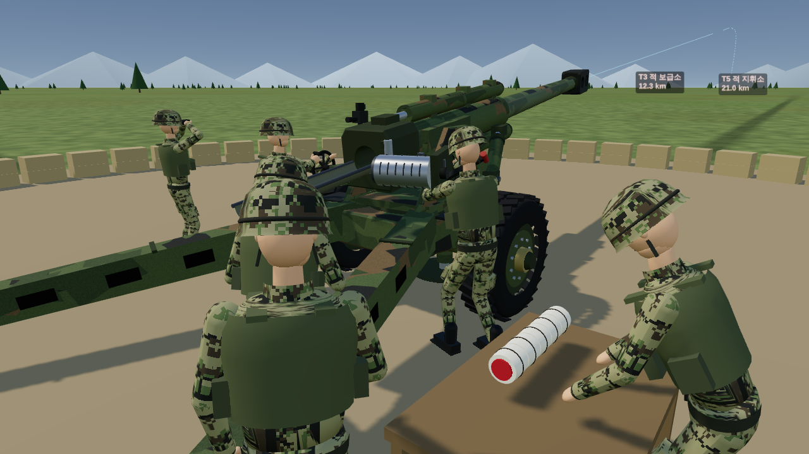
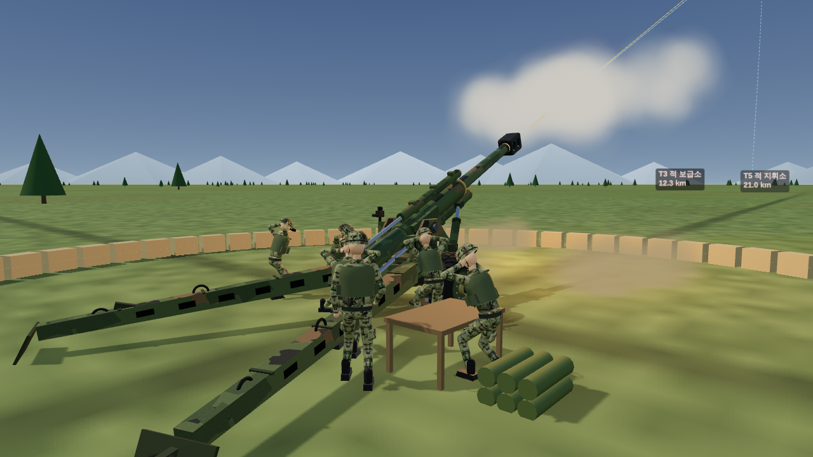
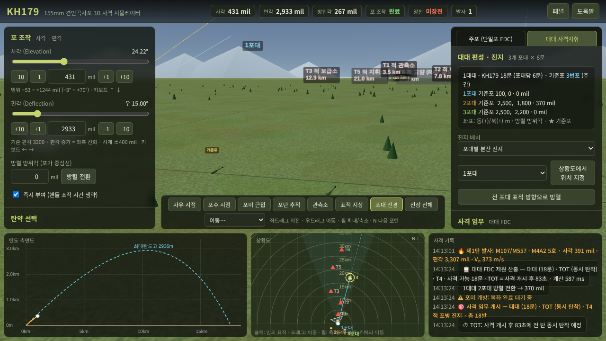

1. 포 하나 직접 쏘기
사각·편각을 mil 단위로 맞추고, 장전 순서대로 하나씩 해야 쏠 수 있음.
① 포미 개방 → ② 신관 결합 → ③ 포탄 장전·송탄 → ④ 장약 장전 → ⑤ 포미 폐쇄 → ⑥ 뇌관 장전 → 격발끈 당기기
- 순서 틀리면 경고 뜸 (포미 닫은 채로 장전, 장약 없이 폐쇄 같은 거)
- 장약 호수 고르면 남는 장약은 잉여 장약통으로 빠짐
- M107 / M795 / M549A1 RAP, 녹색장약 1~5호 / 백색장약 3~7호 / 7R / 8호
- 키보드 1~6으로 한 단계씩, A로 자동 장전, F로 발사

2. 대대 사격 (18문)
1·2·3포대 × 6문 = 18문 편성.
- 진지 배치: 포대별 분산 / 대대 집결 / 상황도 찍어서 내 맘대로
- 사격 부대: 단일 포 / 포대 / 대대 / 여단 TOT (54문) / 군단 TOT (90문)

- 주간은 3번포, 야간은 4번포가 기준포 (야간 고르면 화면도 밤으로 바뀜)
- FDC가 포마다 장약 자동 선택하고 사각·방위각·비행시간 표로 뽑아줌

확장 예정
측지: 진지·표적 좌표를 측지해서 사격제원에 반영
포격요청: 관측자가 사격 요청(요청 → FDC 처리 → 사격) 넣는 흐름
군사지도: 격자 좌표가 들어간 군사지도에서 진지·표적 지정
클로드로 만들었음.

아니 왜 똥포를 연습하는데
부대도 거의 다 사라지는 마당에